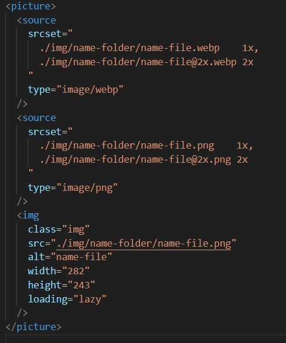
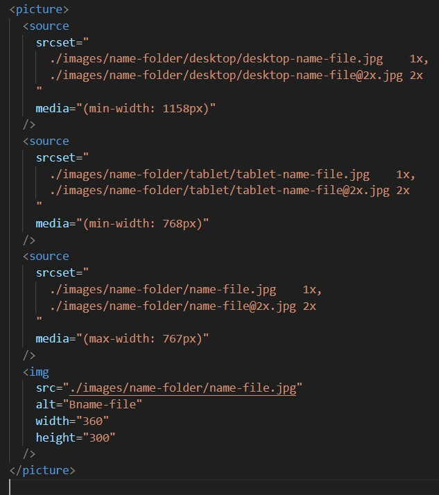

Information and notes on the programming languages HTML, CSS and JS.
Git/GitHub
Git commands
- git status - надає інформацію про поточний стан репозиторію, вказуючи, які файли були змінені, які файли готові до збереження, та які не відстежуються.
- git add --all - щоб додати під контроль усі зміни, що сталися в папці проєкту, тобто нові файли та зміни в існуючих.
- git restore --staged “name-file” - вилучить зміни, пов'язані з файлом “name-file” , з-під контролю, але збереже всі інші зміни у проєкті.
- git commit -m "commit message" - Для збереження змін у файлах проєкту використовується команда. git commit з прапорцем -m, який дозволяє додати коротке повідомлення прямо в командному рядку.
- git log - щоб переглянути історію репозиторію.
- git push - надсилає (push) твої локальні коміти до віддаленого репозиторію. Це забезпечує синхронізацію даних між локальним і віддаленим репозиторіями.
- git pull - скопіювати зміни з віддаленого репозиторія.
- git checkout -b "name" - створення локальной гілки.
- git switch "name" - переміщення між гілками.
-
git merge "name" - забрати зміни
з основної гілки в поточну. (Наприклад:
git switch main)
git pull
git switch "name branch"
git merge "name branch"
GitHub
Створення репозиторію на GitHub
- На сайті GitHub у верхньому правому куті натисни на кнопку +, щоб відкрити випадаюче меню. Вибери пункт New repository.
- В обов'язковому полі Repository name введи назву свого репозиторію.
- У необов'язковому полі Description ти можеш додати короткий опис репозиторію. Це допоможе іншим розробникам зрозуміти, про що твій проєкт.
- Також можеш вибрати, чи буде твій репозиторій публічним (Public), чи приватним (Private). Приватні репозиторії бачитимеш лише ти. Якщо ти хочеш ділитись своїм репозиторієм (наприклад, із ментором), твій репозиторій має бути публічним.
- Рекомендовано в полі Initialize this repository with: встановити галочку на чекбокс Add a README file. Це автоматично додасть у репозиторій файл, який можна заповнити інформацією про проєкт.
- У полі Add .gitignore рекомендовано обрати зі списку пункт Node. Частою помилкою новачка є вибір пункту None замість Node, тому будь тут дуже уважним/-ою!
- Натисни кнопку Create repository, і готово!
Основи HTML
Мова HTML це - HyperText Markup Language (мова розмітки гіпертексту) — мова розмітки веб-документів. Набір правил структурування (розмітки) текстової інформації, додавання зображень, створення таблиць, форм, списків тощо.
Tags
Simbols
- Посилання на ресурс з сімволами - Toptal.com
- < - сімвол <
- > - сімвол >
- - будете сприйматися в HTML як пробіл.
Adaptive
-
Підключення одного зображення в декількох форматах з різною щільністю екранів:
 -
Підключення різних зображення в одному форматі з різною щільністю екранів:

Основи CSS
Elements
-
Блоковий елемент (block-level element) займає весь рядок цілком незалежно від обсягу його контенту, тому кілька блокових елементів візуально йдуть один за одним зверху вниз.
-
Рядковий елемент (inline element) — займає те саме місце, що займає його контент. Отже, кілька рядкових елементів можуть розташовуватися в одному рядку. Коли в рядку не вистачає місця для вміщення такого елементу, він переноситься на новий рядок.
-
Флекс-бокс (Flexbox) - це CSS-модуль, який дозволяє легко створювати і управляти макетами елементів в контейнері. Використання флексбоксу робить складання адаптивних і гнучких макетів набагато простішим. Основні концепції Flexbox:
Флекс-контейнер - це елемент, на якому ви застосовуєте display: flex;. Усі його дочірні елементи стають флекс-елементами.
Флекс-елементи - це елементи, що містяться в флекс-контейнері. Вони автоматично підлаштовуються до простору контейнера.
Основні властивості флекс-контейнера:
-
flex-direction:Визначає напрямок флекс-елементів (рядок або стовпчик). -
justify-content:Вирівнює флекс-елементи уздовж головної осі (по горизонталі або вертикалі). -
align-items:Вирівнює флекс-елементи уздовж поперечної осі. -
flex-wrap:Дозволяє флекс-елементам перенестися на новий рядок, якщо вони не вміщаються в контейнер.
Основні властивості флекс-елементів:
-
flex-grow:Визначає, скільки простору може зайняти елемент, у порівнянні з іншими флекс-елементами. -
flex-shrink:Визначає, як елемент може зменшуватися, щоб вміститися в контейнері. -
flex-basis:Вказує початковий розмір елемента до того, як буде використаний flex-grow.
-